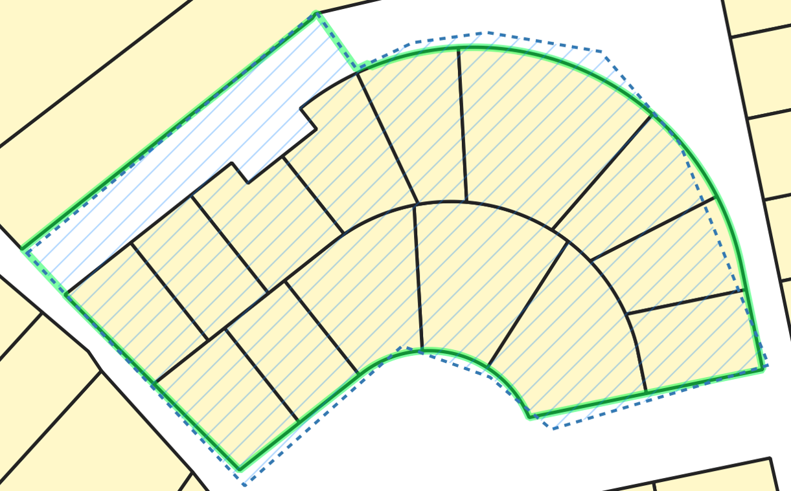
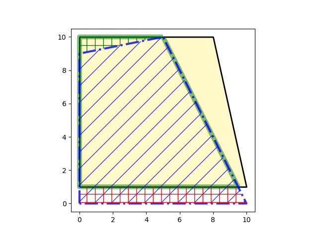
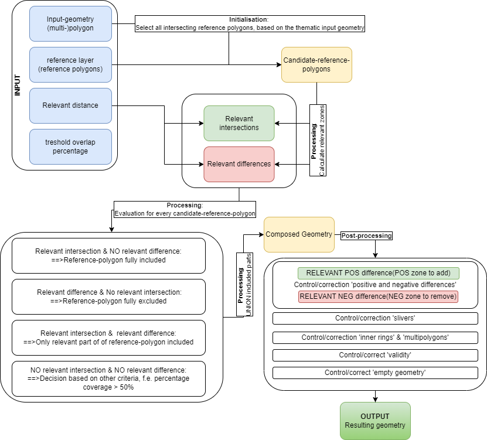
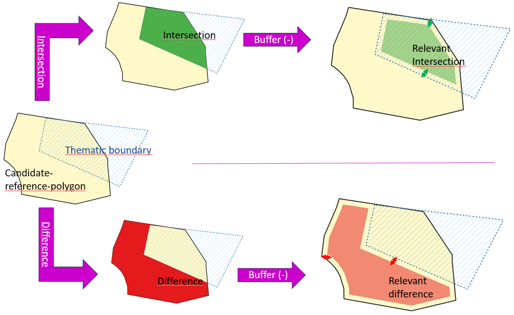
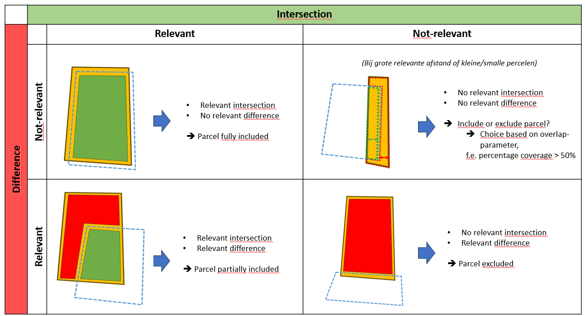

brdr
a Python library to assist in realigning (multi-)polygons (OGC Simple Features) to reference borders


Quick links:
Description
Intro
brdr is a Python package that assists in aligning geometric boundaries to reference boundaries. This is an important task in geographic data management to enhance data quality.
- In the context of geographic data management, it is important to have accurate and consistent boundaries for a variety of applications such as calculating areas, analyzing spatial relationships, and visualizing and querying geographic information.
- When creating geographic data, it is often more efficient to derive boundaries from existing reference data rather than collecting new data in the field.
brdrcan be used to align boundaries from new data to reference data, ensuring that the boundaries are accurate and consistent.
Example
The figure below shows:
- the original thematic geometry (blue),
- A reference layer (yellow-black).
- The resulting geometry after alignment with
brdr(green)

Functionalities
brdr provides a variety of functionalities in the Aligner-class to assist in aligning boundaries, including:
- Loaders:
- aligner.load_thematic_data():Loading thematic data ((Multi-)Polygons) as a dictionary (DictLoader) or geojson ( GeoJsonFileLoader,GeoJsonUrlLoader)
- aligner.load_reference_data():Loading reference data ((Multi-)Polygons) as a dictionary (DictLoader) or geojson ( GeoJsonFileLoader,GeoJsonUrlLoader)
- Processors:
- aligner.process(): Align thematic boundaries to reference boundaries with a specific relevant distance or a range of relevant distances
- aligner.predictor(): Searches all ‘stable’ (=predicted) processresults in a range of relevant distances
- aligner.get_brdr_formula(): Calculating a descriptive formula of a thematic boundary based on a reference layer
- evaluate(): Compares & evaluates input geometries with another version and adds a EVALUATION_FIELD_NAME
- Exporters:
- aligner.get_results_as_geojson(): Returns a collection of geojson-dictionaries with the processresults (resulting geometry, differences,…): This can be used for all processresults or only the ‘predicted’ results
- aligner.get_input_as_geojson(): Returns a geojson-featurecollection from input-dictionaries (thematic or reference)
- aligner.save_results(): Exports the resuling geojson-files to a specified path:This can be used for all processresults or only the ‘predicted’ results
Besides the generic functionalities, a range of Flanders-specific functionalities are provided:
- Loaders:
- GRBActualLoader: Loading actual GRB (parcels, buildings)
- GRBFiscalParcelLoader: Loading fiscal GRB-parcels of a specific year
- Processors:
- grb.get_geoms_affected_by_grb_change(): get thematic geometries that are possibly affected by GRB-changes during a specific timespan
- grb.update_to_actual_grb(): aligns the boundaries of thematic features to the actual GRB-boundaries
Possible application fields
- Geodata-management:
- Implementation of
brdrin business-processes and tooling - Bulk geodata-alignment
- Alignment after reprojection of data
- Cleaning data: In a postprocessing-phase, the algorithm executes sliver-cleanup and validity-cleaning on the resulting geometries
- …
- Implementation of
- Data-Analysis: Investigate the pattern in deviation and change between thematic and reference boundaries
- Update-detection: Investigate the descriptive formula before and after alignment to check for (automatic) alignment of geodata
- …
QGIS-script
An implementation of brdr for QGIS can be found at GitHub-brdrQ. This QGIS- script provides a User Interface to align thematic data to a reference layer, showing the results in the QGIS Table of Contents.
Installation
You can install the latest release of brdr from GitHub or PyPi:
pip install brdrBasic example
from brdr.aligner import Aligner
from brdr.enums import OpenbaarDomeinStrategy
from brdr.geometry_utils import geom_from_wkt
from brdr.loader import DictLoader
# CREATE AN ALIGNER
aligner = Aligner(
crs="EPSG:31370",
)
# ADD A THEMATIC POLYGON TO THEMATIC DICTIONARY and LOAD into Aligner
thematic_dict = {"theme_id_1": geom_from_wkt("POLYGON ((0 0, 0 9, 5 10, 10 0, 0 0))")}
loader = DictLoader(thematic_dict)
aligner.load_thematic_data(loader)
# ADD A REFERENCE POLYGON TO REFERENCE DICTIONARY and LOAD into Aligner
reference_dict = {"ref_id_1": geom_from_wkt("POLYGON ((0 1, 0 10,8 10,10 1,0 1))")}
loader = DictLoader(reference_dict)
aligner.load_reference_data(loader)
# EXECUTE THE ALIGNMENT
relevant_distance = 1
process_result = aligner.process(
relevant_distance=relevant_distance,
od_strategy=OpenbaarDomeinStrategy.SNAP_SINGLE_SIDE,
threshold_overlap_percentage=50,
)
# PRINT RESULTS IN WKT
print("result: " + process_result["theme_id_1"][relevant_distance]["result"].wkt)
print(
"added area: "
+ process_result["theme_id_1"][relevant_distance]["result_diff_plus"].wkt
)
print(
"removed area: "
+ process_result["theme_id_1"][relevant_distance]["result_diff_min"].wkt
)The resulting figure shows:
- the reference polygon (yellow-black)
- the original geometry (blue)
- the resulting geometry (green line)
- the added zone (green squares)
- the removed zone (red squares) 
More examples can be found in Examples
Workflow
(see also Basic example)
To use brdr, follow these steps:
- Create a Aligner-class with specific parameters:
- relevant_distance (m) (default: 1): Distance-parameter used to decide which parts will be aligned, and which parts remain unchanged.
- od_strategy (enum) (default: SNAP_SINGLE_SIDE): Strategy to align geodata that is not covered by reference-data
- threshold_overlap_percentage (%)(0-100) (default 50)
- crs: The Coordinate Reference System (CRS) (default: EPSG:31370 - Belgian Lambert72)
- Load thematic data
- Load reference data
- Process (align) the thematic data
- Results are returned:
- Resulting geometry
- Differences: parts that are ‘different’ from the original geometry (positive or negative)
- Positive differences: parts that are added to the original geometry
- Negative differences: parts that are removed form the original geometry
- Relevant intersections: relevant intersecting parts of the reference geometries
- Relevant differences: relevant differences of the reference geometries
The brdr-algorithm
The algorithm for alignment is based on 2 main principles:
- Principle of intentionality: Thematic boundaries can consciously or unconsciously deviate from the reference borders. The algorithm should keep notice of that.
- Selective spatial conservation of shape: The resulting geometry should re-use the shape of the reference borders where aligned is of relevance.
The figure below shows a schematic overview of the algorithm: 
The algorithm can be split into 3 main phases:
- Initialisation:
- Deciding which reference polygons are candidate-polygons to re-use its shape. The reference candidate polygons are selected based on spatial intersection with the thematic geometry.
- Processing:
- Process all candidate-reference polygons one-by-one
- Calculate relevant zones for each candidate-reference-polygon
- relevant intersections: zones that must be present in the final result
- relevant differences: zones that must be excluded from the final result 
- Evaluate each candidate based on their relative zones: which parts must be kept and which parts must be excluded 
- Union all kept parts to recompose a resulting geometry
- Post-processing:
- Validation/correction of differences between the original input geometry and the composed intermediate resulting geometry after processing the algorithm
- Technical validation of inner holes and multipolygons that are created by processing the algorithm
- Clean-up slivers
- Make the resulting geometry valid
RESULT:
A new resulting output geometry, aligned to the reference-polygons
Development
pip-compile
PIP_COMPILE_ARGS="-v --strip-extras --no-header --resolver=backtracking --no-emit-options --no-emit-find-links"
pip-compile $PIP_COMPILE_ARGS
pip-compile $PIP_COMPILE_ARGS -o requirements-dev.txt --all-extrastests
python - m
pytest - -cov = brdr
tests / --cov - report
term - missingDocker
As an example-usage (proof-of-concept), a Dockerfile is created to set up a GRB-specific webservice that ‘predicts’ one or multiple actual geometries for a input-geometry based on the reference source GRB. This webservice is based on ‘brdr’.
This POC can be found at brdr-webservice (GRB-actualisator).
docker build -f Dockerfile . -t grb_webservice
docker run --rm -p 80:80 --name grb_webservice grb_webservice
example can be found at: http://localhost:80/docs#/default/actualiser_actualiser_postMotivation & citation
A more in-depth description of the algorithm can be found in the following article (in dutch):
- Dieussaert, K., Vanvinckenroye, M., Vermeyen, M., & Van Daele, K. (2024). Grenzen verleggen. Automatische correcties van geografische afbakeningen op verschuivende onderlagen Onderzoeksrapporten Agentschap Onroerend Erfgoed,
Acknowledgement
This software was created by Athumi, the Flemish data utility company, and Flanders Heritage Agency.


Comments and contributions
We would love to hear from you and your experiences with
brdror its sister projectbrdrQ. The discussions forum is the place to be when:brdrorbrdrQor their applicability to your use casesIf you have discovered a bug in the
brdrlibrary you can report it here:https://github.com/OnroerendErfgoed/brdr/issues
We try to keep the list of issues as clean as possible. If you’re unsure whether something is a bug, or whether the bug is in
brdrorbrdrQ, we encourage you to go through the discussions forum first.